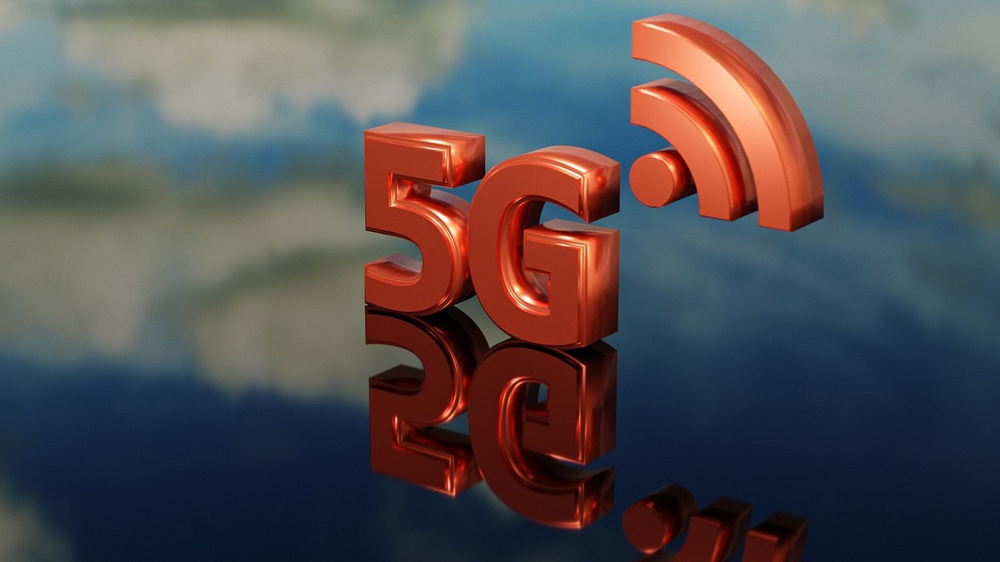

Blog Title 2: 5G gathers pace, platform approach will drive scalability in India

5G gathers pace, platform approach will drive scalability in India
Neil Shah ETTelecom
Dec 27, 2023
The growing consumption of streaming multimedia, gaming, and social media (not only download but upload) as well will accelerate the need for the 5G smartphone upgrades. We shall see introduction of “unlimited 5G as well as bundled 5G+fiber+services FMC (Fixed Mobile Convergence) plans” which will help push millions of power users who are seeing increasing value in having 5G services with the willingness to pay a premium."
The transformation of India’s digital landscape over the last ten years can be owed to the exponential rise of cellular generation and adoption.
The Platform – 5G From Consumer to Enterprises
Smartphones while remain the major chunk of the revenues for operators, app ecosystem, advertising and content companies. 5G as everyone has marketed, the overall architecture, infrastructure, spectrum assets unlock significant capacity, throughputs and efficient network performance to use it for applications beyond smartphones.One of the initial meaningful 5G applications which was not possible in 2G-4G era would be the 5G Fixed Wireless Access (FWA). The 5G FWA will help in bridging the digital divide boosting the highly underpenetrated broadband connected households in India. This is estimated to climb to beyond 100 million connections over the next five years out of the 200 million+ households striving for quality broadband services. As the network rolls out wider and deeper into rural India over the next couple of years, we see 5G FWA penetrating.
Initial deployments will be with 5G as FWA backhaul and last meters being wired to the Wi-Fi access point/CPE in homes. As the cost of the 5G sub-6GHz+mmWave module comes down we will see proliferation of 5G FWA CPEs within the household.
5G Redcap (reduced capability) version of 5G post 2026 would take the 5G broadband applications penetration further beyond mobile and home broadband use-cases into other enterprise use-cases from telematics, Point-of-Sale (PoS) terminals, smart meters, agriculture, low-cost CPEs and so forth. So, 5G Redcap will be another important lever in the 5G monetization strategy for the entire ecosystem enabling more robust and efficient 5G connectivity dissemination at scale.
The Prelude – From 2G to 4G
The 2G era was an inflection point while 3G rollout struggled with more than a dozen operators fighting the battle which was eventually put to rest with advent of 4G and especially Reliance Jio. The early 4G era (2016-2019) coincided very well as it helped India to cross the “digital chasm” in a significant way while also leading to consolidation down to barely three operators.This unlocked a healthier, more sane and scalable competitive landscape which was well-tested and transformational in the pandemic-led inflection point for consumption of data and digital transformation of every Indian mobile user. The year 2020-2022 were key to help the entire nation realize importance of cellular networks especially technologies such as 4G or better becoming the lifeline and economy-booster for the new age digital era.
About Author

Neil Shah
ETTelecom
Related Blogs

Blog Title 1: 5G Private Networks and 5G Use Cases
Date: Thursday, September 15th, 2022
Author: Praschant Chugh
Read More
Blog Title 3: Beyond 5G: The new era of connectivity.
Date: July 7, 2023
Author: Ken Nagai
Read More
Blog Title 4: Insight on Green Network Security in 5G.
Date: February 27, 2023
Author: Ercin Torun
Read More